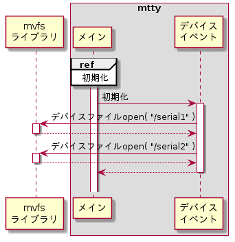
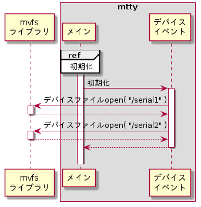
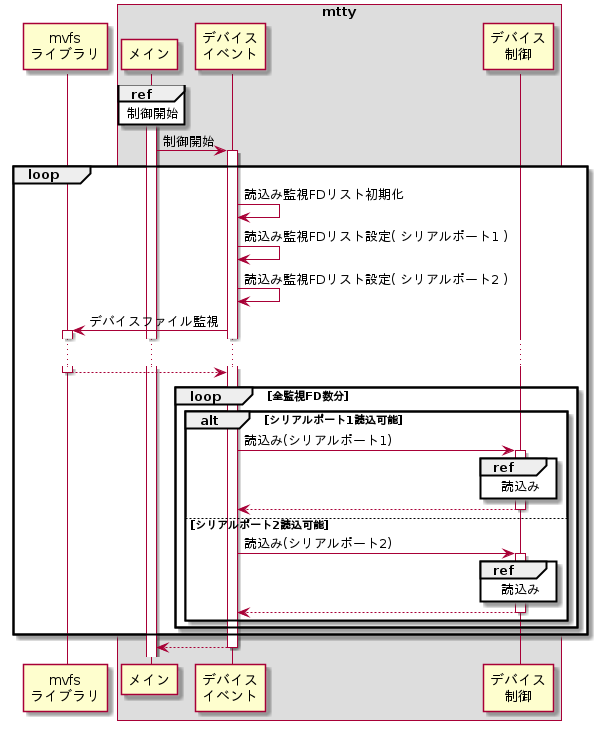
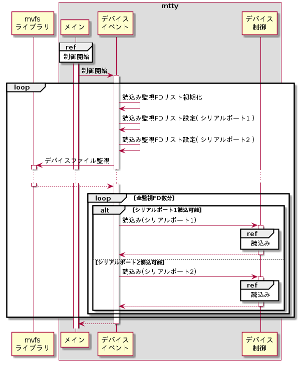

デバイスイベントモジュール
デバイスイベントモジュールは下記機能を持つ。
初期化
初期化時にデバイスファイルオープンを行う。シーケンスを以下に示す。
シーケンス


デバイスファイルオープン
シリアルポート1とシリアルポート2のデバイスファイルをopenし、ファイルディスクリプタ(FD)を保存しておく。詳細は外部仕様(デバイスファイルopen機能)のデバイスファイルopenを参照のこと。
制御開始
デバイスファイルを監視し、デバイスが読書き可能になった時にデバイス制御の読み込み機能を起動する。シーケンスを以下に示す。
シーケンス


読込み監視FDリスト初期化
C標準ライブラリのmemset()を用いて読込み管理FDリストを初期化する。設定パラメータを以下に示す。
memset()設定パラメータ
| # | 引数名 | 設定値 |
| 1 | *s | (読込み監視FDリストポインタ) |
| 2 | c | 0 |
| 3 | n | sizeof ( LibMvfsFds_t ) |
読込み監視FDリスト設定
mvfsライブラリのLIBMVFS_FDS_SET()マクロを使用してFDリストへデバイスファイルopen時に取得したFDを設定する。設定パラメータを以下に示す。
LIBMVFS_FDS_FDS_SET()設定パラメータ
| # | 引数名 | 設定値 | |
| シリアルポート1 | シリアルポート2 | ||
| 1 | _PFDS | (読込み監視FDリストポインタ) | |
| 2 | _FD | シリアルポート1のFD | シリアルポート2のFD |
デバイスファイル監視
デバイスファイルの読込み監視を開始する。詳細は外部仕様(デバイスファイルread機能)の読み込み待ち合わせを参照のこと。
イベント発行
デバイスファイル監視を行うmvfsライブラリのLibMvfsSelect()から制御が戻った時、各FDリストにFDが設定されているかmvfsライブラリのLIBMVFS_FDS_CHECK()マクロを用いて判定し、設定されていたFDに対応するデバイス制御の処理を呼び出す。設定パラメータを以下に示す。
LIBMVFS_FDS_CHECK()設定パラメータ
| # | 引数名 | 設定値 | |
| シリアルポート1判定時 | シリアルポート2判定時 | ||
| 1 | _PFDS | (変数ポインタ) | |
| 2 | _FD | シリアルポート1のFD | シリアルポート2のFD |
判定優先度と対応関数
| 優先度 | ファイルディスクリプタ | 処理 |
| 1 | シリアルポート1 | デバイス制御モジュールの読込み機能 |
| 2 | シリアルポート2 |